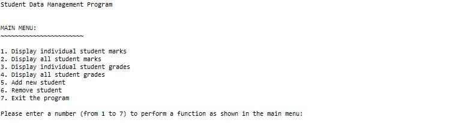
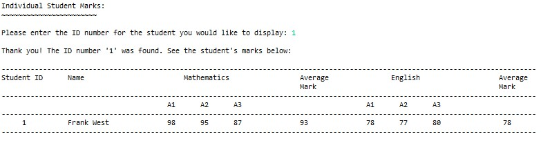
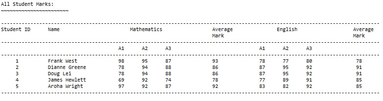
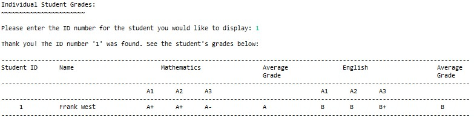
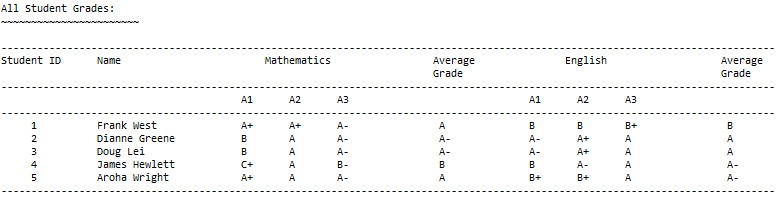
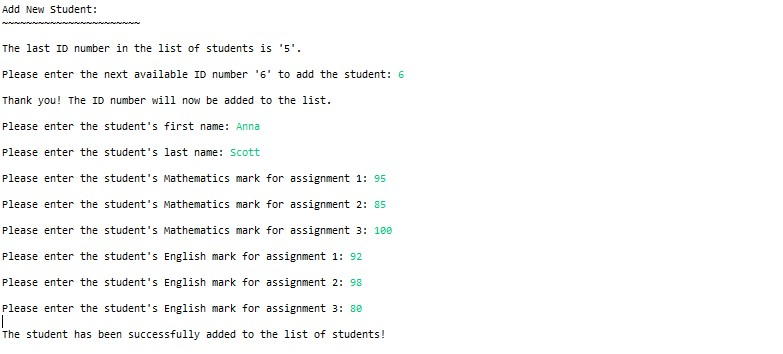
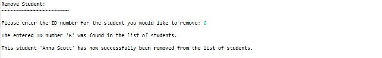
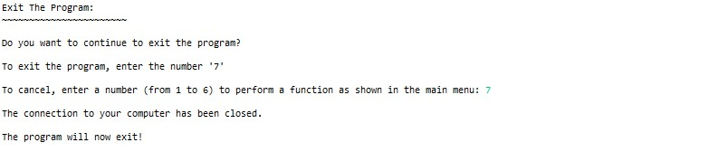

Data Management Console Application for Student Data
Project Background
This project involved designing and building a console application to store and display student information, their assignment marks and grades.
Discovery
A text file containing mock data with student information, including assignment marks and grades, was supplied. The application needed to read the text file and store the information in memory before users could interact with the program.
A main menu was required for users to gain access to functionality within the application, including viewing, adding and removing student information and exiting the program. The main menu needed to be displayed after every functionality was carried out by the user.
Written code was required to be well organised and readable with comments.
Development
The application was written in Java and developed within the Eclipse IDE for Java Developers.
The application reads a locally saved text file with student information and saves it in RAM. It contains a main menu that gives users access to program functionality of displaying student marks and grades and adding or removing student records. The main menu displays after every task completed by a user.
Testing
User acceptance testing was carried out with a test plan indicating the expected and actual results of all test items to ensure the program was initialising properly by loading data from the text file and functioning as intended.
Deployment
The source code was uploaded to a GitHub repository after this project.
Take a Closer Look
The screenshots below show what the application looks like in action.
Screens for User Interaction
The Main Menu

Individual Student Marks

All Student Marks

Individual Student Grades

All Student Grades

Add a New Student

Remove a Student

Exit the Program
